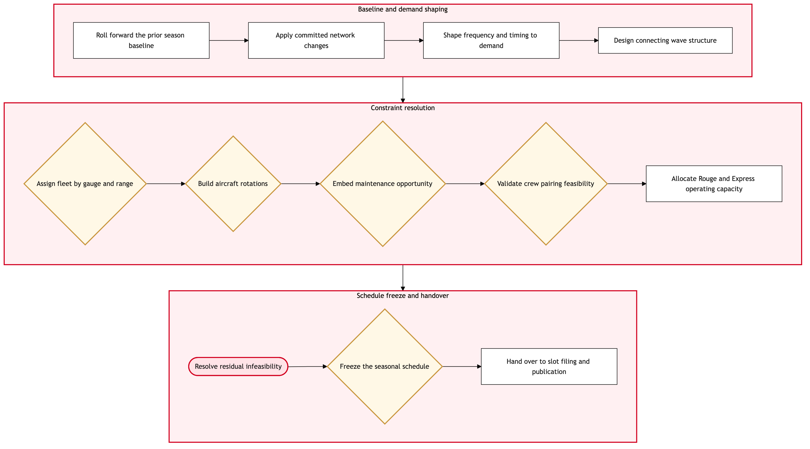

Updated 2026-08-18
Seasonal Schedule Build in NetLine Plan
The seasonal schedule is constructed in NetLine Plan from the committed long-range plan, resolving frequency, timing, fleet assignment and rotation feasibility into a schedule that can actually be flown, crewed and maintained.
Air Canada contextSeasonal build is where the plan meets physical reality. NetLine Plan has to reconcile four constraints that pull in different directions: revenue wants peak-time departures, the connecting bank wants coordinated arrival and departure waves, maintenance wants overnight ground time at a base, and crew wants pairings that close legally at a crew base. Air Canada runs this across mainline, Rouge and the Express operators, which means three operating models on one schedule.
Process flow
Click to zoom

Process steps
▼
Phase 1 — Baseline and demand shaping
4 steps
| Step | Activity | Role | System | Input | Output | KPI | Dec | Exc | Pain point |
|---|---|---|---|---|---|---|---|---|---|
| 1.1 | Roll forward the prior season baseline | Schedule Planner | NetLine/PlanB | Prior equivalent season and long-range plan | Draft baseline schedule | Baseline available at cycle open at 100 percent | N | N | The prior season carries forward compromises whose original reason is undocumented |
| 1.2 | Apply committed network changes | Schedule Planner | NetLine/PlanB | Approved route cases and exits | Baseline updated with committed changes | All committed changes applied before demand shaping | N | N | Late-approved route cases arrive after the baseline is already being optimised |
| 1.3 | Shape frequency and timing to demand | Network Planning Analyst | PROS Revenue ManagementB | O and D demand forecast by day of week | Frequency and timing proposal | Schedule matched to demand profile within 1 frequency on 90 percent of routes | N | N | Demand shaping and connecting bank integrity frequently want different departure times |
| 1.4 | Design connecting wave structure | Network Planning Analyst | NetLine/PlanB | Timing proposal and hub bank definition | Connection wave structure by hub | Connecting itineraries within the target window above 85 percent | N | N | Every timing change made for local demand ripples through the connecting bank |
▼
Phase 2 — Constraint resolution
5 steps
| Step | Activity | Role | System | Input | Output | KPI | Dec | Exc | Pain point |
|---|---|---|---|---|---|---|---|---|---|
| 2.1 | Assign fleet by gauge and range | Fleet Planner | NetLine/PlanB | Frequency proposal and fleet availability | Fleet assignment by leg | Fleet assignment feasible on first pass above 80 percent | Y | N | Fleet renewal means the available fleet in the target season is itself still moving |
| 2.2 | Build aircraft rotations | Schedule Planner | NetLine/PlanB | Fleet assignment and turn time standards | Feasible tail rotations | Rotations feasible without manual intervention above 75 percent | Y | N | Rotation infeasibility is discovered late and forces timing changes back through the bank design |
| 2.3 | Embed maintenance opportunity | Technical Services Planner | TRAXB | Draft rotations and maintenance requirement | Rotations with protected maintenance ground time | Maintenance opportunity protected on 100 percent of tails | Y | N | Maintenance ground time is the first thing traded away when the schedule is tight |
| 2.4 | Validate crew pairing feasibility | Crew Planning Liaison | Jeppesen CrewB | Draft schedule | Pairing feasibility assessment with cost estimate | Schedule pairs within crew cost budget above 90 percent | Y | N | Crew cost consequences of a timing decision are not visible inside the scheduling tool |
| 2.5 | Allocate Rouge and Express operating capacity | Schedule Planner | Lufthansa Systems NetLineB | Committed schedule and operator agreements | Legs assigned to mainline, Rouge or Express | Operator allocation complete before freeze at 100 percent | N | N | Express operator capacity is contractually bounded and cannot flex late in the cycle |
▼
Phase 3 — Schedule freeze and handover
3 steps
| Step | Activity | Role | System | Input | Output | KPI | Dec | Exc | Pain point |
|---|---|---|---|---|---|---|---|---|---|
| 3.1 | Resolve residual infeasibility | Schedule Planner | NetLine/PlanB | Constraint violation list | Resolved schedule or accepted exception | Residual infeasible legs at freeze below 1 percent | N | Y | Late resolution is manual and trades one constraint for another without visibility of the cost |
| 3.2 | Freeze the seasonal schedule | Network Strategy Manager | NetLine/PlanB | Resolved schedule | Frozen seasonal schedule | Schedule frozen on the published cycle date at 100 percent | Y | N | Freeze slips when a single route case is unresolved, delaying every downstream function |
| 3.3 | Hand over to slot filing and publication | Schedule Planner | Lufthansa Systems NetLineB | Frozen schedule | Schedule released to slot coordination and publication | Handover within 2 business days of freeze | N | N | Post-freeze changes still occur and each one re-triggers slot and publication work |
Swim lanes
Schedule Planner1.1 1.2 2.2 2.5 3.1 3.3
Network Planning Analyst1.3 1.4
Fleet Planner2.1
Technical Services Planner2.3
Crew Planning Liaison2.4
Network Strategy Manager3.2
Systems touched
NetLine/PlanBPROS Revenue ManagementBTRAXBJeppesen CrewBLufthansa Systems NetLineBAmadeus Altea InventoryADatabricks LakehouseB
Key performance indicators
- Seasonal schedule frozen on the published cycle date at 100 percent
- Aircraft rotations feasible without manual intervention above 75 percent
- Maintenance opportunity protected on 100 percent of tails at freeze
- Connecting itineraries within the target window above 85 percent
- Schedule pairs within the crew cost budget above 90 percent
Risks and control points
- Maintenance ground time traded away under schedule pressure, converting a planning decision into a downstream airworthiness and AOG risk
- Crew cost consequences invisible during build and surfacing only at pairing
- Fleet availability moving during fleet renewal after fleet assignment is complete
- Freeze slipping and compressing slot filing, alliance coordination and publication
- Local demand shaping degrading the connecting bank that carries Sixth Freedom traffic
Air Canada Process Wiki — process and systems reference compiled from public sources
for IT Application Management and User Support pre-sales discovery.
Built 2026-08-18. Every system carries an evidence tier: tier C is an industry pattern and tier U is an open
question, and neither should be asserted as fact about Air Canada without confirmation in discovery.
Not affiliated with or endorsed by Air Canada. Air Canada, Aeroplan and Altitude are trademarks of Air Canada.